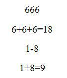
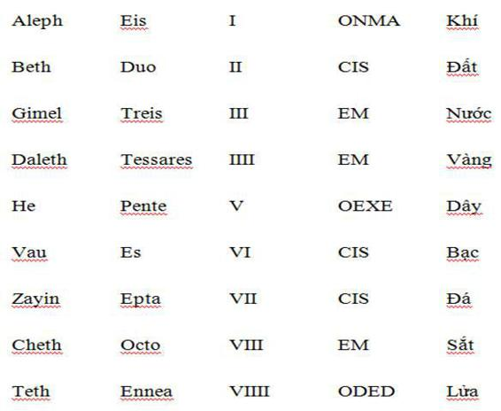
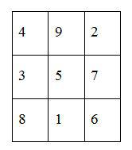
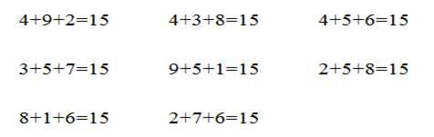
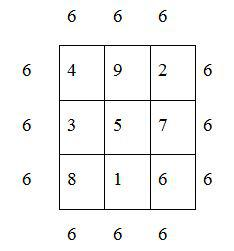
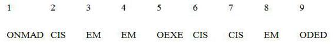
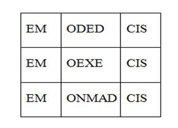
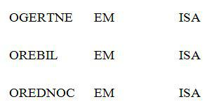

“Đây là chỗ khó chịu của vấn đề,” Pothos nói.
“Ngày xưa người ta không phải giải thích mọi chuyện.
Người ta chiến đấu để mà chiến đấu.”
A. Dumas, TỬ TƯỚC BRAGELONNE.
Ngả người trên lưng ghế tài xế, Corso nhìn phong cảnh bên ngoài. Gã đã tách khỏi làn đường chính ở chỗ rẽ cuối con đường, trước khi nó chìm sâu vào thị trấn. Với những bức tường cũ kỹ bao quanh, khu phố cổ bồng bềnh trong sương khói từ dưới sông dâng lên, lơ lửng trong thinh không như một hòn đảo màu xanh mà quái. Ấy là một thế giới nhập nhằng, chẳng có ánh sáng cũng chẳng có bóng tối. Một rạng đông ngập ngừng và lạnh lẽo buông xuống Castille, với làn ánh sáng đầu ngày le lói làm hiện lên những ống khói, mái nhà, những tháp chuông về phía Đông.
Gã muốn xem giờ, nhưng cái đồng hồ đã bị nước lọt vào trong cơn bão ở Meung. Mặt kính mờ mịt và đĩa số không đọc được. Corso nhìn thấy đôi mắt kiệt quệ của mình trong gương chiếu hậu. Meung-sur-Loire, trong đêm trước ngày thứ Hai đầu tiên của tháng Tư. Bây giờ họ đã ở xa, và đã là thứ Ba. Đó là một hành trình trở lại dài dằng dặc, tất cả các nhân vật đã chìm mất ở mãi xa xôi: Balkan, Câu lạc bộ Dumas, Rochefort, Milady, La Ponte. Chỉ còn tiếng vọng của câu chuyện sau khi giở trang cuối cùng. Tác giả đã gõ từ khóa cuối cùng trên bàn phím Qwerty, ở hàng dưới cùng, phím thứ hai từ bên phải sang. Vì vậy với một hành động tùy ý không có gì hơn là những trang giấy in, những tờ giấy kỳ lạ, trơ trơ. Những cuộc đời đột ngột trở nên xa lạ.
Rạng sáng hôm ấy, chẳng khác gì vừa từ trong mơ tỉnh lại, Corso ngồi, râu ria lởm chởm, bẩn thỉu, mắt đỏ ngầu. Bên cạnh là cái túi vải buồm cũ kỹ chứa cuốn Chín cánh cửa cuối cùng còn lại. Và cô gái. Đấy là toàn bộ những thứ ở lại trên bờ biển sau khi thủy triều rút. Cô rên khe khẽ, gã liền quay lại nhìn. Cô ngủ trên ghế bên cạnh, mình khoác áo len thô, đầu tựa lên vai gã. Miệng cô hé mở, hơi thở dịu dàng. Thỉnh thoảng cô khẽ rùng mình. Rồi lại rên khe khẽ. Một vết nhăn dọc nhỏ xíu nằm giữa hai chân mày khiến cô trông như một bé gái đầy ưu tư. Một bàn tay thò ra từ dưới chiếc áo khoác. Lòng bàn tay ngửa lên, những ngón tay hơi mở ra, như thể cô vừa để thứ gì đậy tuột mất, hoặc như thể đang chờ đợi.
Corso lại nghĩ về Meung, và về chuyến đi. Về Boris Balkan đứng bên gã hai đêm trước đó trên mảnh sân trời còn ướt nước mưa. Tay cầm Rượu vang Anjou, Richelieu mỉm cười như một đối thủ cũ, vừa cảm phục, vừa đồng cảm. “Ông thật khác thường, ông bạn.” Những lời cuối này của ông ta giống như lời từ biệt; đó là những lời duy nhất có ý nghĩa. Phần còn lại - lời mời nhập bọn cùng những vị khách khác - hoàn toàn chỉ là hình thức. Cũng chẳng phải Balkan muốn tống gã đi cho rồi - kỳ thực ông ta đã lộ rõ vẻ thất vọng khi Corso bỏ đi. Nhưng Balkan biết rằng Corso sẽ từ chối trở thành một người trong đám bọn họ. Sau cùng chỉ còn một mình Corso đứng trên sân, gã cúi người trên lan can lắng nghe thật lâu hồi âm từ thất bại của chính mình. Gã từ từ hồi tỉnh, nhìn quanh, cố nhớ lại xem mình đang ở đâu. Rời khỏi những ô cửa sổ sáng rực, gã chậm rãi lang thang trên những đường phố tối tăm theo lối về khách sạn. Gã không bị Rochefort khống chế nữa, và ở Quán Sainte Jacques, gã nghe nói Milady cũng đi rồi. Hai người đã rời khỏi đời gã để trở lại lãnh địa u ám của họ, để một lần nữa vào vai những nhân vật không có thật, khó hiểu như những quân cờ. Gã tìm thấy La Ponte và cô gái không khó khăn gì. Gã không quan tâm La Ponte, nhưng cảm thấy nhẹ lòng khi thấy cô vẫn ở đấy. Gã sợ sẽ mất cô cùng với những nhân vật khác trong câu chuyện. Gã chụp nhanh lấy tay cô trước khi cô cũng tan biến trong đám tro tàn của thư viện thành Meung và dẫn cô ra xe, mặc kệ La Ponte đứng nhìn. Corso nhìn hắn lùi xa dần trong gương chiếu hậu. La Ponte vẻ bối rối, gào lên kêu gọi tình bạn bị lạm dụng quá mức của họ, không hiểu chuyện gì xảy ra. Giống như một thợ săn cá voi vô tích sự, đầy tai tiếng, đánh mất niềm tin của mọi người, bị bỏ rơi trên chiếc xuồng nhỏ với ít bánh mì và khẩu phần nước cho ba ngày, mặc cho phiêu giạt cùng sóng biển. Hãy cố đến Batavia, ngài Bligh[1]. Nhưng rồi, đến cuối phố, Corso dừng xe, ngồi trước tay lái, gã nhìn con đường phía trước, cô gái ngạc nhiên nhìn gã. La Ponte cũng không phải một nhân vật thực. Corso thở dài cài số lùi quay lại đón hắn. Cả ngày lẫn đêm hôm sau, cho đến tận lúc họ để hắn xuống xe ở một cột đèn giao thông trên đường phố Madrid, La Ponte không nói một lời. Thậm chí hắn không hề phản ứng khi Corso nói bản thảo của Dumas đã mất. Cũng chẳng có bao nhiêu lời hắn có thể nói.
Corso liếc nhìn cái túi vải bạt dưới chân cô gái đang ngủ. Thất bại thì đau đớn, tất nhiên, giống như một vết dao trong ký ức. Gã biết mình đang chơi đúng luật - legitime certaverit - nhưng đi sai hướng. Đúng vào thời điểm chiến thắng, mặc dù chỉ một phần và không toàn vẹn, toàn bộ niềm vui thắng lợi bị giật mất. Chiến thắng chỉ là tưởng tượng. Giống như đánh bại một hồn ma trong mơ, đấm vào gió hay gào thét vào nơi im lặng. Có lẽ vì vậy mà Corso lúc này ngờ vực nhìn chằm chằm thành phố lơ lửng trong sương, chờ đợi trước khi tiến sâu vào, như muốn chắc rằng nền tảng của nó ăn sâu bám rễ xuống đất.
Gã nghe hơi thở mềm mại nhịp nhàng của cô trên vai. Không rời mắt khỏi cái cổ trần dưới những nếp áo gấp của cái áo khoác len thô, gã đưa tay tới cho đến khi những ngón tay cảm nhận được hơi ấm của làn da phập phồng theo nhịp thở. Vẫn như mọi lần, da thịt cô tỏa ra mùi của tuổi trẻ và của cơn sốt. Bằng tưởng tượng và theo trí nhớ, gã dễ dàng lần theo những đường cong thân thể kéo xuống tới bàn chân trần, bên cạnh đôi giày mềm và cái túi vải. Irene Adler. Gã vẫn không biết gọi cô thế nào. Nhưng gã không quên được tấm thân trần trong bóng tối, đường lượn ở hông sáng ánh đèn, đôi mắt hé mở của cô. Lặng lẽ và đẹp không thể tả, đắm chìm trong tuổi trẻ của chính mình, đồng thời thanh thản như mặt hồ lặng sóng, cộng với sự khôn ngoan của nhiều thế kỷ. Và trong đôi mắt long lanh nhìn gã chăm chú từ trong bóng tối, hình chiếu đen sẫm của chính Corso nằm đó giữa toàn bộ những tia sáng từ bầu trời tụ lại.
Giờ thì cô đang nhìn gã, đôi mắt xanh như những viên ngọc lục bảo dưới hàng mi dài. Cô đã thức dậy và ngái ngủ dụi vào người gã. Rồi ngồi dậy, cảnh giác, cô nhìn gã.
“Chào ông, Corso.” Cái áo khoác tuột xuống chân. Chiếc áo pull hoàn hảo bó sát mình, cô mềm mại như một con thú non xinh đẹp. “Ta đang làm gì ở đây?”
“Đợi,” gã trỏ thành phố giống như đang bồng bềnh trong sương mù. “Đợi nó biến thành hiện thực.”
Cô nhìn và lúc đầu không hiểu gì. Rồi thong thả mỉm cười.
“Có lẽ chẳng bao giờ thay đổi,” cô nói.
“Vậy thì cứ ở đây. Chỗ này không tệ, một thế giới lạ lùng, hư ảo dưới chân.” Gã quay lại cô. “Tôi có thể cho anh mọi thứ nếu anh quy phục và say mê tôi. Có phải cô sẽ đề nghị như thế với tôi không?”
Cô cười rất dịu dàng. Rồi cúi xuống nghĩ ngợi và lại ngẩng lên nhìn thẳng vào mắt gã.
“Không, em nghèo,” cô nói.
“Tôi biết.” Đó là sự thực. Corso không cần phải tìm nó trong ánh mắt trong trẻo của cô. “Hành lý của cô, và toa ngồi trên tàu… Thật lạ. Tôi thường nghĩ tất cả bọn cô đều có tài sản vô hạn, ở ngoài đó, bên kia cầu vồng.” Nụ cười của gã sắc như con dao vẫn còn nằm trong túi gã. “Túi vàng của Peter Schlemiel[2].”
“Vậy ông nhầm rồi.” Cô mím môi ương bướng. “Em là tất cả những thứ em có.”
Đó cũng là sự thực, và Corso đã biết từ lúc đầu. Cô không bao giờ nói dối. Vừa ngây thơ vừa khôn ngoan, cô trung thành và say đắm theo đuổi một cái bóng.
“Tôi biết.” Gã nguệch ngoạc lên trời như thể trong tay cầm cái bút tưởng tượng. “Cô không đưa tôi tờ giấy để ký ư?”
“Giấy tờ?”
“Phải. Thường người ta gọi khế ước như thế. Thời nay thì phải là một bản hợp đồng với hàng chữ nhỏ đúng không? ‘Trong trường hợp có tranh chấp, các bên phải chịu sự phán quyết của tòa án…’ Thật buồn cười. Không biết tòa án nào xử chuyện này.”
“Đừng ngớ ngẩn.”
“Sao cô chọn tôi?”
“Em được tự do,” cô thở dài buồn bã như thể phải trả giá để được nói điều đó. “Em có thể lựa chọn. Bất cứ ai cũng có thể.”
Corso mò trong túi áo khoác bao thuốc lá nhàu nát. Còn một điếu cuối cùng. Gã moi nó ra nhìn chăm chú, dùng dằng không biết có nên đưa lên miệng hay không. Rồi gã lại nhét nó vào bao. Có lẽ lát nữa gã sẽ cần một hơi khói. Gã chắc thế.
“Cô biết từ đầu,” gã nói, “rằng có hai câu chuyện không liên quan gì đến nhau. Đó là lý do vì sao không bao giờ cô quan tâm đến câu chuyện của Dumas. Milady, Rochefort, Richelieu, đấy chỉ là những nhân vật phụ trong phim đối với cô. Giờ thì tôi hiểu tại sao cô thụ động như thế. Hẳn cô chán khủng khiếp. Cô chỉ ngồi lật trang cuốn Lính ngự lâm của mình và xem tôi làm những việc sai lầm…”
Qua kính chắn gió, cô đang nhìn thành phố khoác trên mình màn sương màu xanh. Tay cô giơ lên, rồi lại bỏ xuống, như thể điều cô định nói là vô nghĩa. “Tất cả những gì em có thể làm là theo ông,” cô đáp. “Mỗi người đều phải một mình bước đi trên đoạn đường nào đó. Ông không nghe nói tự do ý chí sao?” Cô cười buồn. “Một số trong chúng ta phải trả giá rất cao vì chuyện đó.”
“Nhưng không bao giờ hoàn toàn đứng ngoài. Đêm đó, bên sông Seine… Sao cô lại giúp tôi đối phó với Rochefort?”
Cô đưa bàn chân trần chạm vào cái túi vải. “Hắn mò theo bản thảo của Dumas. Nhưng Chín cánh cửa cũng ở trong đó. Em chỉ muốn tránh sự can thiệp ngu ngốc.” Cô nhún vai. “Và em cũng không muốn hắn đánh ông.”
“Còn ở Sintra? Cô cảnh cáo tôi về vụ Fargas.”
“Tất nhiên. Cuốn sách gắn chặt với chuyện đó.”
“Và còn bí mật về cuộc gặp mặt ở Meung…”
“Em không biết chuyện đó. Chỉ đơn giản suy ra được từ trong sách.”
Corso nhăn mặt. “Tôi cứ nghĩ cái gì cô cũng biết.”
“Vậy thì ông nhầm.” Bây giờ đến lượt cô bực mình. “Và em không hiểu tại sao ông nói em như thể em là một kẻ thuộc về bầy đàn. Em chỉ có một mình từ lâu lắm rồi.”
Nhiều thế kỷ, Corso chắc chắn như thế. Biết bao thế kỷ cô đơn. Không còn gì nghi ngờ. Gã đã ôm tấm thân trần của cô, chìm nghỉm trong đôi mắt, đã ở bên trong cô, thưởng thức làn da cô, cảm nhận qua môi mình nhịp đập khe khẽ trên cổ cô. Gã đã nghe tiếng rên nhè nhẹ như một đứa trẻ sợ hãi hay như một thiên thần bị ruồng bỏ đi tìm hơi ấm. Gã đã quan sát cô trong giấc ngủ, nắm tay siết chặt, quằn quại trong cơn ác mộng về những thượng đẳng thần tóc vàng, giáp trụ lấp lánh hào quang và không biết thương xót, độc đoán không khác gì Thượng đế khi bắt họ diễu hành đúng giờ.
Bây giờ, nhờ cô, dù quá muộn, gã hiểu Nikon, hiểu các bóng ma của nàng và cách nàng tuyệt vọng bám bíu vào cuộc đời. Nỗi sợ của Nikon, những bức ảnh đen trắng của nàng, cố gắng vô vọng xuôi đuổi những hồi ức truyền lại qua những bộ gien từng sống sót qua Auschwitz, số hiệu đóng dấu trên người cha nàng, và cái Trật tự Đen dường như cũng xa xưa như tinh thần và lời rủa của con người. Bởi vì Chúa và quỷ có thể là cùng một người và cùng một thứ, và ai cũng hiểu điều đó, theo cách của mình.
Nhưng cũng như đối với Nikon, Corso tàn nhẫn. Tình yêu là một gánh nặng quá sức đối với gã, và gã không có tấm lòng cao thượng như Porthos. “Đó là nhiệm vụ của cô sao?” gã hỏi. “Bảo vệ Chín cánh cửa ư? Tôi không tin cô sẽ nhận được một huân chương vì chuyện đó.”
“Thế là bất công, ông Corso.”
Gần như vẫn là câu ấy. Một lần nữa, Nikon bị để mặc cuốn trôi theo dòng đời, mong manh và nhỏ bé. Ai xui nàng bám bíu lấy hiện thực, để trốn tránh những cơn ác mộng của mình?
Gã nhìn cô gái. Có lẽ ký ức về Nikon là sự ăn năn của gã. Nhưng gã không muốn nhận nhịn mà chấp nhận nữa. gã liếc nhìn gương chiếu hậu: khuôn mặt gã co rúm trong cay đắng và mất mát.
“Vậy ư? Ta đã mất hai trong ba cuốn sách. Và chuyện gì xảy ra với cái chết vô nghĩa của Fargas và bà Nam tước?” Bọn họ không mấy quan trọng đối với gã, nhưng Corso cảm thấy chua xót. “Lẽ ra cô có thể ngăn ngừa chuyện đó.”
Cô lắc đầu rất nghiêm túc và nhìn gã chằm chặp. “Có những chuyện không tránh được, ông Corso. Một vài thành trì phải bị thiêu hủy, một vài người phải bị treo cổ. Có những con chó sinh ra để xé xác nhau thành từng mảnh nhỏ, có những người đức hạnh với số mệnh phải bị chặt đầu, những cánh cửa định mệnh mở cho người khác tiến vào.” Cô nhăn mặt và cúi đầu xuống. “Nhiệm vụ của em, như ông gọi, là đảm bảo ông an toàn qua hết hành trình này.”
“Ồ, đó là một hành trình dài, chỉ kết thúc khi trở về điểm xuất phát.” Corso trỏ thành phố lơ lửng trong sương mù. “Và bây giờ tôi phải xuống đó.”
“Ông không phải. Không ai buộc ông. Ông chỉ cần quên hết và bỏ đi.”
“Không cần tìm câu trả lời?”
“Không cần thử. Ông đã có câu trả lời bên trong chính ông.”
“Đó là một câu hay. Hãy ghi nó lên bia mộ tôi khi tôi cháy bùng bùng trong địa ngục.”
Cô âu yếm vỗ nhẹ lên đầu gối gã. “Đừng ngớ ngẩn, ông Corso. Mọi chuyện diễn ra như người ta muốn nhiều hơn là người ta thường nghĩ. Thậm chí cả quỷ cũng có thể chấp nhận diện mạo khác đi. Hay tính cách khác đi.”
“Chẳng hạn như biết hối hận.”
“Đúng. Nhưng cũng có thể là có tri thức và sắc đẹp.” Cô lại băn khoăn nhìn thành phố. “Hoặc giả là quyền lực và của cải.”
“Nhưng kết quả cuối cùng vẫn như nhau: kiếp đọa đày.” Gã lặp lại động tác ký tên vào bản hợp đồng tưởng tượng. “Vẫn phải trả giá cho sự ngây thơ của linh hồn.”
Cô lại thở dài. “Ông đã trả giá từ lâu rồi, Corso. Và hiện giờ vẫn đang phải trả. Đó là một thói quen kỳ lạ, cứ trì hoãn nó đến tận cùng. Giống như hồi cuối của một thảm kịch… Mỗi người kéo dài kiếp đày đọa của mình từ thuở ban đầu. Còn con quỷ, hắn chẳng là gì khác hơn nỗi đau của Chúa; cơn cuồng nộ của kẻ độc tài mắc kẹt trong cái bẫy của chính mình. Kẻ thắng nói sao cũng được.”
“Chuyện đó xảy ra khi nào?”
“Lâu hơn ông có thể tưởng tượng nhiều lắm. Hết sức nghiệt ngã. Em đã chiến đấu hàng trăm ngày đêm trong tuyệt vọng và không có nơi ẩn nấp.” Một nụ cười bí ẩn nở trên môi cô. “Đó là điều duy nhất em tự hào - chiến đấu đến cùng. Em rút lui nhưng không quay lưng lại, xung quanh là những kẻ khác cũng từ trên cao rơi xuống. Em khản giọng vì thét gào cuồng nộ, sợ hãi và kiệt sức. Sau trận đánh, em đi qua một cánh đồng hoang vắng và cô đơn như cõi vình hằng giá băng… Đôi khi em vẫn bắt gặp dấu vết của một trận chiến hoặc một chiến hữu ngày xưa đi qua không dám ngẩng đầu.”
“Vậy thì sao lại là tôi? Sao cô không tìm kẻ nào đấy bên phe thắng? Tôi chỉ chiến thắng được ở tỷ lệ năm ngàn đối một.”
Cô gái quay đi nhìn ra xa. Mặt trời đang lên, tia bình minh đầu tiên cắt ngang không gian buổi sáng bằng một vệt hồng chiếu thẳng vào ánh mắt cô. Khi cô quay lại nhìn Corso, gã cảm thấy hoa mắt khi nhìn sâu vào toàn bộ ánh sáng phản chiếu trong đôi mắt xanh.
“Bởi vì sự mình bạch không bảo giờ chiếng thắng. Và quyến rũ một gã khờ chả bao giờ là việc đáng làm.”
Rồi cô ghé mình sang hôn gã rất chậm, dịu dàng vô hạn. Như thể đã phải đợi chờ đời đời kiếp kiếp để làm chuyện đó.
SƯƠNG MÙ CHẬM RÃI tan đi. Tựa như thành phố lửng lơ trên không đã quyết định hạ xuống đất. Bình minh tỏa sáng trên quần thể màu xám và vàng đất của lâu đài Alcazar, tháp chuông nhà thờ và cây cầu đá với những cột chống chìm trong làn nước đen thẫm, giống như một bàn tay hiểm ác vắt ngang dòng sông.
Corso khởi động máy. Xe lướt êm trên đường phố vắng. Vì họ đi xuống, ánh mặt trời mới lên bị bỏ lại đằng sau, lửng lơ trên đầu họ. Thành phố chậm rãi xích lại gần hơn, và họ từ từ dấn vào một thế giới sắc màu lạnh lẽo và tịch mịch bao la không chịu rời tàn dư của những mảng sương mù xanh xám.
Gã ngập ngừng trước khi qua cầu, dừng xe dưới mái vòm đá ở lối lên cầu; bàn tay đặt trên bánh lái, đầu hơi cúi, cằm chĩa ra - hệt như bức chân dung thợ săn rình mồi chụp nghiêng. Gã gỡ kính ra lau, mặc dù không cần thiết. Hết sức từ từ, gã ngắm cây cầu, trong đôi mắt không có kính, nó giống như một lối đi mơ hồ với những đường nét chập chờn. Gã không quay lại nhìn cô gái nhưng vẫn biết cô đang nhìn mình. Gã đeo kính lên, chỉnh lại trên sống mũi, cảnh vật lại sắc nét, nhưng chẳng phải nhờ vậy mà thấy an tâm hơn. Bờ sông bên kia tối om. Dòng nước trôi qua những trụ cầu giống như dòng thời gian đen sẫm của con sông Lethe ngăn cách địa ngục và trần gian. Trong mảng đêm cuối cùng chưa chịu biến đi, cảm giác nguy hiểm trong gã trở nên hữu hình, sắc nhọn như một mũi kim thép. Corso cảm thấy mạch đập rộn ràng trên cổ tay khi gã nắm lấy cần số. Vẫn còn kịp quay lại, gã tự nhủ. Như vậy thì những gì đã xảy ra đã chẳng xảy, chẳng có gì phải đến sẽ đến. Còn về phần giá trị thực tế của Nunc scio, “Giờ thì tôi biết,” do Thượng đế hay do quỷ đặt ra, cái đó hết sức mơ hồ. Gã nhăn mặt. Chúng chẳng là gì ngoài những từ ngữ. Gã biết rằng trong vài phút nữa gã sẽ ở bên kia cầu, bên kia sông. Verbum dimissum custodiat Arcanum. Ngẩng nhìn trừng trừng lên trời, gã tìm kiếm người cung thủ có hay không những mũi tên trong bao tên, trước khi vào số và từ từ tiến lên.
TRỜI RẤT LẠNH BÊN NGOÀI XE, vì vậy gã dựng cổ áo lên. Gã cảm nhận được cái nhìn chăm chú của cô trùm lên mình khi băng qua đường, Chín cánh cửa kẹp dưới nách, không hề nhìn lại. Cô không đòi đi theo gã, và vì một vài lý do không rõ ràng gã biết rằng như thế tốt hơn. Ngôi nhà chiếm gần hết cả khối nhà, màu đá xám ngự trị cả một quảng trường hẹp, nằm giữa những tòa nhà cổ có cửa chính và cửa sổ đóng chặt trông như một trích đoạn phim bị dừng hình, vừa mù vừa câm. Mặt tiền xám có bốn con quái thú nằm trên máng xối: con dê, cá sâu, con quỷ tóc rắn và một con rắn. Có một ngôi sao David trên mái vòm kiểu người Moor bên trên cánh cổng sắt han gỉ dẫn vào trong với hai con sư tử bằng đá cẩm thạch và một cái giếng. Tất cả không xa lạ gì với Corso, nhưng gã chưa bao giờ sợ hãi như vậy khi tiến vào nhà. Gã nhớ lại một trích đoạn cổ: “Có thể những người đàn ông được nhiều phụ nữ vuốt ve sẽ bớt ân hận hay bớt sợ hơn khi vượt qua thung lung tối tăm…” Đại loại như thế. Có lẽ gã được vuốt ve chưa đủ, bởi miệng gã khô khốc, và gã sẵn sàng bán linh hồn để lấy nửa chai gin. Rồi lại còn Chín cánh cửa gây cảm giác như thể nó chứa chín khối chì thay vì những bức tranh.
Gã đẩy cánh cổng nặng nề, nhưng sự yên lặng vẫn nguyên vẹn. Thậm chí tiếng dội khe khẽ của đế giày khi gã băng qua mảnh sân với những tảng đá lát mòn vẹt dưới những bước chân và những cơn mưa hàng thế kỷ qua hồ như cũng không ảnh hưởng gì tới bầu không khí tĩnh mịch. Một lối đi dưới mái vòm dẫn tới cầu thang hẹp dốc đứng. Ở trên cùng, gã nhìn thấy một cánh cửa nặng nề màu sẫm trang trí những hàng đinh tán dày. Cửa đóng: cánh cửa cuối cùng. Trong một thoáng, Corso nháy mắt chế nhạo với khoảng không, với bản thân mình, nhe răng ra. Gã vừa là tác giả không chủ tâm vừa là đối tượng chế nhạo của trò đùa hoặc sai lầm của chính mình. Một sai lầm được sắp đặt kỹ càng bởi một bàn tay vô liêm sỉ, đầy những lời dụ hoặc hão huyền mời mọc tham gia câu chuyện, đưa gã tới những kết luận nào đó chỉ đáng vứt đi. Cuối cùng gã đã có những kết luận xác nhận bởi chính văn bản, như thể đó là một cuốn sách đáng tởm trong khi nó không đáng tởm. Hoặc sẽ ra sao nếu nó đáng tởm? Sự thực là, thứ cuối cùng gã nhìn thấy trong miếng kim loại bóng lộn gắn chặt vào cánh cửa là khuôn mặt chính gã, khuôn mặt rất thật của gã. Một hình ảnh méo mó, tổ hợp của cái tên trên tấm biển và nét mặt gã, với ánh đèn từ đằng sau nơi mái vòm phía trên cầu thang dẫn xuống sân ra phố. Nơi dừng chân cuối cùng của gã trên chặng đường kỳ lạ sang bên kia bóng tối.
Gã nhấn chuông. Một, hai, ba lần. Không chút phản ứng. Cái núm đồng hồ chết rồi; không có âm thanh bên trong khi gã ấn vào. Gã lại cảm nhận thấy cái bao nhàu nát chứa điếu thuốc cuối cùng trong túi. Một lần nữa gã quyết định không châm lửa. Nhấn chuông lần thứ tư. Và lần thứ năm. Rồi gã siết chặt nắm đấm mà đập mạnh vào cửa, hai lần. Rồi cánh cửa mở ra êm ái trong bản lề tra mỡ tử tế, không có tiếng rít khủng khiếp. Và Varo Borja xuất hiện trên khung cửa. hoàn toàn tự nhiên.
“Chào, Corso.”
Borja không có vẻ ngạc nhiên gì khi nhìn thấy gã. Mồ hôi đọng đầy trên cái trán hói của lão, râu không cạo. Áo khoác mở phanh, tay áo sơ mi xắn cao. Lão nom có vẻ mệt, những quầng thâm dưới mắt vì mất ngủ. Nhưng ánh mắt lão rực lên háo hức. Lão không hỏi Corso làm gì ở đấy vào giờ này, dường như chỉ để ý cuốn sách Corso kẹp dưới nách. Lão đứng bất động ở đó, như thể vừa bị lôi ra khỏi một công việc tỉ mỉ hay một giấc mơ, và chỉ muốn trở lại ngay với nó.
Đây là kẻ chịu trách nhiệm. Corso biết thế khi thấy sự ngu xuẩn của chính mình biến thành thực thể đứng ngay trước mặt. Tất nhiên. Varo Borja - triệu phú, nhà buôn sách cỡ quốc tế, nhà sưu tầm sách lừng danh, vẻ giết người chuyên nghiệp. Với một sự tò mò gần như mang tính nghiên cứu, Corso quan sát kỹ khuôn mặt lão. Bây giờ gã cố gắng tách ra những điểm, những manh mối mà đáng ra đã phải cảnh báo gã từ rất sớm. Những tín hiệu bị bỏ qua; những góc cạnh của sự điên rồ, sự khủng khiếp hay bóng đen ẩn náu trong những nét quen thuộc, tầm thường ấy. Nhưng gã không thấy được gì hết. Chỉ có vẻ mặt xa lạ, cuồng nhiệt, không tò mò hay đam mê, chìm đắm trong những hình ảnh xa với đối với người đàn ông đứng trên ngưỡng cửa này. Mặc dù Corso đang giữ cuốn sách đáng nguyền rủa. Chính lão, Varo Borja, kẻ ẩn trong bóng tối của cuốn sách giống như thế, lần theo dấu chân Corso như con rắn độc, mới là kẻ giết chết Victor Fargas và bà Nam tước Ungern. Không chỉ nhằm tái hợp hai mươi bảy bức tranh khắc để tạo thành chín bức chính xác, mà còn để xóa đi toàn bộ dấu vết và đảm bảo không ai khác có thể phát hiện điều bí ẩn của người thợ in Torchia. Trong toàn bộ âm mưu, Corso là công cụ để khẳng định giả thuyết đã được xác nhận - rằng cuốn sách thực được phân bố trên ba cuốn. Gã cũng là nạn nhân của bất kỳ phản ứng nào từ phía cảnh sát. Lúc này, khi phải trả giá cho sự tôn kính sai lầm đối với bản năng của chính mình, Corso nhớ lại cảm tưởng khi nhìn lên bức tranh trần ở Quinta da Soledade. Cuộc hiến tế của Abraham không có nạn nhân thay thế: gã là kẻ giơ đầu chịu báng. Và Varo Borja, tất nhiên, là người buôn sách cứ sáu tháng một lần tới gặp Victor Fargas để mua một trong những cuốn sách quý của ông ta. Vào ngày Corso tới gặp Fargas, Borja có mặt ở Sintra để hoàn thành các chi tiết trong kế hoạch của mình và chờ đợi để khẳng định lý thuyết rằng cần phải có cả ba cuốn sách thì mới hóa giải được bí mật của Torchia. Tờ phiếu thu dở dang của Fargas được viết cho lão. Đó là lý do tại sao Corso không thể gặp được Borja khi gọi điện về nhà lão ở Toledo. Rồi sau đó, ngay trong đêm ấy, trước khi tới gặp Fargas trong cuộc hẹn cuối cùng, Borja gọi cho Corso từ khách sạn, giả bộ mình đang ở nước ngoài. Corso không chỉ khẳng định nghi ngờ của Borja, mà còn trao cho lão chìa khóa của điều bí ẩn, chính hành động đó đã kết án tử hình Fargas và bà Nam tước. Với niềm tin chắc cay đắng, Corso quan sát từng ô đố chữ rớt vào vị trí của chúng. Khi gạt qua một bên tất cả những manh mối sai lầm hướng tới Câu lạc bộ Dumas, Varo Borja là lời giải của toàn bộ những sự kiện không giải thích được trong mạch quái quỷ còn lại của âm mưu. Điều đó đáng để cười phá lên. Nếu toàn bộ câu chuyện tởm lợm này có chút gì đấy đáng cười.
“Tôi mang theo cuốn sách,” Corso nói rồi chìa cho Borja cuốn Chín cánh cửa.
Borja hơi gật đầu, cầm lấy cuốn sách và chỉ thoáng liếc nhìn. Đầu lão khẽ nghiêng sang một bên như thể đang nghe ngóng một thanh âm phía sau, trong nhà, Ngay sau đó lão lại nhìn Corso và hấp háy mắt, ngạc nhiên vì gã vẫn chưa đi.
“Anh đã đưa tôi cuốn sách. Anh còn muốn gì nữa?”
“Tiền công.”
Borja nhìn gã chằm chằm, vẻ không hiểu. Rõ ràng đầu óc lão để ở chỗ khác. Cuối cùng lão nhún vai, như muốn nói rằng chuyện đó chẳng có liên quan tới gã. Lão quay vào nhà, để mặc Corso tùy ý đóng cửa, ở lại đó hay biến đi đâu thì tùy.
Corso theo lão đi qua hai cánh cửa khác vào một gian phòng cách xa hành lang và tiền sảnh. Cửa chớp đều đóng kín, vì vậy không có ánh sáng lọt vào, đồ đạc bị đẩy hết về phía bên kia, để cả sàn nhà lát cẩm thạch đen trống trải. Một vài cánh tủ kính đựng sách mở tung. Căn phòng được chiếu sáng bằng chừng một tá ngọn nến gần như đã tàn hết. Những giọt nến vương vãi khắp nơi: trên bệ cái lò sưởi trống rỗng, trên sàn, trên đồ đạc vật dụng trong phòng. Những ngọn nến tỏa ra quầng sáng hồng hồng, rung rinh nhảy múa trước làn gió lùa hay một cử động dù nhẹ nhất. Căn phòng bốc mùi giống như trong nhà thờ, hay như trong hầm mộ.
Vẫn không để ý đến Corso, Borja dừng lại ở giữa phòng. Ở đó, dưới chân lão, là một vòng tròn vẽ bằng phấn đường kính khoảng chín mươi phân, bên trong có một ô vuông chia thành chín ô nhỏ. Xung quanh vòng tròn là những chữ số La Mã và những vật kỳ quái: một mẩu dây, một cái đồng hồ nước, một con dao gỉ, một cái vòng tay chạm hình rồng, một nhẫn vàng, một lò than kim loại đầy than hồng, một cái lọ thủy tinh, một dúm đất, một cục đá. Nhưng Corso nhăn mặt khi thấy những vật khác nằm trên sàn. Nhiều cuốn sách gã vốn ngưỡng mộ, những cuốn sách nằm trên giá ít ngày trước, lúc này nằm đó, rách nát, bẩn thỉu, nhiều tờ bị xé ra. Những trang sách đầy hình vẽ và nét gạch dưới cùng với vô số dấu hiệu kỳ dị. Nếu leo lét cháy trên một vài cuốn sách, những giọt nến to rỏ giọt xuống bìa hoặc những trang mở ra. Một vài cây nến khi tan chảy tạo thành những ký tự ngoằn ngoèo trên giấy. Trong đám tan hoang này Corso nhận ra những bức tranh khác thuộc về cuốn Chín cánh cửa của Victo Fargas và bà Nam tước Ungern. Chúng lẫn vào những tờ khác trên sàn và cũng phủ đầy những giọt sáp và những chú giải bí ẩn.
Gã cúi xuống nhìn gần hơn những tờ còn lại, hầu như không tin được mức độ của thảm họa. Một bức tranh trong Chín cánh cửa, bức số VI, người đàn ông bị trẹo chân phải thay vì chân trái, đã bị cháy một nửa bởi những tia lửa từ ngọn nến bắn ra. Hai bức số VII, một với bàn cờ trằng và một với bàn cờ đen, nằm bên Theatrum diabolicum in từ năm 1512 bị xé khỏi bìa. Một bức tranh khác, bức số I, lòi ra từ trong cuốn De magna imperfectaque opera của Valerio Lorena, một cuốn sách cực hiếm mà trước đó ít lâu Borja có cho Corso xem song chỉ cho phép gã chạm vào nó. Giờ nó rách bươm, nằm trên sàn.
“Đừng đụng vào cái gì,” gã nghe Varo Borja nói. Borja đứng trước vòng tròn, mải mê lật lật cuốn Chín cánh cửa của mình. Dường như lão không xem chính những trang sách mà xem gì đó bên ngoài chúng, gì đó ở bên trong hình vuông và vòng tròn trên sàn, thậm chí có thể xa hơn: tít trong lòng đất sâu thẳm.
Corso nhìn như thể lần đầu tiên gặp lão. Gã chậm rãi đứng lên. Trong khi gã đứng lên như vậy, các ngọn nến liền rung rinh xung quanh gã.
“Nếu tôi sờ vào bất cứ vật gì thì cũng chẳng có gì khác,” gã nói, vung tay trỏ những cuốn sách và những trang giấy vương vãi trên sàn. “Sau việc ông đã làm.”
“Anh chẳng biết gì hết, Corso. Anh tưởng anh biết, nhưng không phải. Anh dốt và ngu nữa. Anh là cái loại cứ tưởng sự hỗn loạn là tình cờ và bỏ qua sự tồn tại của một trật tự không lộ diện.”
“Quên những lời rác rưởi ấy đi. Ông đã phá hoại mọi thứ, ông không có quyền làm thế. Không một ai có quyền làm thế.”
“Anh lầm. Trước hết chúng là sách của tôi. Và điều quan trọng hơn, chúng tồn tại với mục đích là để được sử dụng. Chúng có giá trị thực tiễn chứ không phải là giá trị nghệ thuật hay thẩm mỹ. Khi đi theo một con đường, người ta cần đảm bảo rằng không ai khác có thể theo sau mình. Bây giờ là lúc những cuốn sách đó phục vụ cho mục đích của chúng.”
“Đồ điên. Ông lừa tôi ngay từ đầu.”
Borja không có vẻ gì đang nghe. Lão đứng bất động, tay cầm cuốn Chín cánh cửa còn lại, chăm chú xem bức minh họa số I.
“Lừa ai?” Hai mắt láo gắn chặt vào cuốn sách khi nói, tỏ rõ vẻ khinh bỉ đối với Corso. “Anh tự coi mình quá cao đấy. Tôi thuê anh không cần cho anh biết lý do và ý định của tôi. Một người hầu không tham gia vào quyết định của bất kỳ người nào trả tiền cho hắn. Anh phải trộm lấy thứ tôi muốn, đồng thời phải chịu hậu quả chuyên môn của một vài hành động bắt buộc. Tôi tưởng tượng rằng khi tôi nói, cảnh sát ở cả Pháp lẫn Bồ Đào Nha đều đang lần tới chỗ anh.”
“Còn ông?”
“Tôi ở cách xa tất cả những chuyện đó, rất an toàn. Chỉ chút nữa thôi sẽ chẳng có gì quan trọng nữa.”
Thế rồi, trước sự hoảng sợ của Corso, lão xé bức tranh từ Chín cảnh cửa.
“Ông làm gì vậy?”
Varo Borja lặng yên tiếp tục xé những tờ khác.
“Tôi đang đốt những con tàu và những cây cầu đằng sau tôi. Và tiến vào miền đất chưa ai biết tới.” Lần lượt lão xé từng bức tranh trong cuốn sách cho đến hết cả chín bức. Lão đưa những bức tranh sát vào mắt. “Thật đáng tiếc là anh không thể theo tôi. Giống như lời tuyên cáo của bức họa thứ tứ, số phận của mọi người không giống nhau.”
“Ông tin mình sẽ đi tới đâu?”
Borja buông rơi cuốn sách bị xé tả tơi xuống sàn bên cạnh những cuốn khác. Lão giương mắt nhìn chín bức họa và vòng tròn, kiểm tra sự trùng hợp kỳ lại giữa chúng.
“Tới gặp ai đó” là lời đáp bí hiểm của lão. “Để tìm kiếm viên đá mà Đấng Sáng thế bỏ đi, viên đá của nhà hiền triết, nền tảng của công trình triết học. Viên đá của quyền lực. Quỷ vốn ưa biến hóa, Corso ạ. Từ con chó đen của Faust đến thiên thần ánh sáng lầm lạc cố phá vỡ sức kháng cự của thánh Antony. Nhưng, trên tất cả, sự ngu muội khiến hắn chán ngán, và hắn ghét sự đơn điệu… Nếu có thời gian và ý thích, tôi sẽ mời anh xem vài cuốn sách dưới chân anh. Một số cuốn đề cập đến một truyền thuyết cổ: kẻ thù của Cơ đốc sẽ xuất hiện ở bán đảo Iberia, trong một thành phố chất chồng ba nền văn hóa, trên bờ một dòng sông sâu hoắm như một vết rìu, dòng Tagus.”
“Đó là cái ông đang cố làm ư?”
“Là thứ tôi sắp đạt được. Đạo hữu Torchia chỉ đường cho tôi: Tenebris Lux.”
Lão cúi mình xuống vòng tròn trên sàn, đặt mấy bức họa lên đó, lấy đi vài bức khác, vò nhàu hoặc xé rách rồi quăng đi. Những ngọn nến từ phía dưới rọi vào mặt, trông lão đầy ma quái với đôi mắt tối sẫm.
“Hy vọng nó hoàn toàn phù hợp,” lão thầm thì. Miệng lão giống như một vạch tối. “Những bậc thầy cổ xưa của ma thuật đen từng dạy Torchia về những bí mật giá trị và khủng khiếp nhất, họ biết con đường dẫn tới vương quốc bóng tối. ‘Đó là con vật ngậm đuôi trong miệng quấn quanh chỗ ấy.’ Anh hiểu không? Xà hoàn[3] của các nhà giả kim thuật Hy Lạp: con rắn ở trang đầu, vòng tròn ma thuật, nguồn gốc của sự thông thái. Mọi thứ đều được ghi lại trong cái vòng đó.”
“Tôi muốn tiền của tôi.”
“Có bao giờ anh tò mò về những thứ này không?” Borja tiếp tục, không nghe thấy gì, đôi mắt sẫm nhìn chăm chú. “Để nghiên cứu, chẳng hạn như quan hệ bất biến long-xà-quỷ vốn trở đi trở lại rất đáng ngờ trong tất cả các văn bản về chủ đề này từ xa xưa.”
Lão nhấc một vật bằng thủy tinh nằm cạnh vòng tròn, một cái ly có chân với tay cầm hình hai con rắn quấn vào nhau, đưa lên uống một ngụm. Trong đó là một thứ chất lỏng màu tối, Corso để ý thứ nước đó gần như đen, giống như nước trà rất đặc.
“Serpens aut draco qui caudam devoravit[4].” Varo Borja mỉm cười bâng quơ rồi đưa tay quệt mép. Thứ đồ uống đó để lại một vết màu đen trên mu bàn tay và bên má phải lão. “Chúng canh giữ những báu vật: thần đêm và hoàng hôn, bộ long cừu vang…” Trong khi nói, trông lão như người đãng trí, điên rồ, một người đang diễn tả một giấc mơ từ bên trong. “Chúng là rắn hay rồng mà người Ai Cập cổ đại vẽ trong một vòng tròn, miệng ngậm đuôi mình để chỉ ra rằng chúng sinh từ một nhất thể và tự chúng là đủ. Những lính gác không ngủ, kiêu hãnh và sáng suốt. Những con rồng ẩn kín giết chết kẻ không xứng đáng và chỉ cho phép mình xiêu lòng trước người nào chiến đấu đúng luật. Những người lính canh giữ câu thần chú thất lạc: công thức ma thuật để mở những con mắt và khiến một người ngang bằng với Chúa.”
Corso vươn cằm ra. Gã đứng, lặng lẽ và gầy nhom trong chiếc áo khoác. Bóng những ngọn nến nhảy múa giữa mí mắt khép hờ khiến hai má râu ria của gã trông hõm vào. Tay đút túi, một bàn tay sờ vào cái bao trong có điếu thuốc cuối cùng, tay kia đặt lên con dao bấm chưa mở, bên cạnh chao gin.
“Tôi đã bảo, trả tiền cho tôi. Tôi muốn ra khỏi đây.”
Giọng nói bao hàm sự đe dọa, nhưng Corso không xác định được Borja có nghe ra không. Gã thấy từ từ lão tỏ ra miễn cưỡng.
“Tiền?” Borja lại nhìn Corso khinh bỉ. “Anh nói gì vậy, Corso? Anh không hiểu cái gì sắp xảy ra sao? Trước mắt anh là bí mật mà loài người mơ tưởng từ bao thế kỷ. Anh có biết có bao nhiêu người bị tra tấn, bị hỏa thiêu và bị xé xác thành từng mảnh chỉ để được thoáng thấy điều anh sắp chứng kiến hay không? Tất nhiên anh không thể theo tôi. Anh sẽ chỉ được yên lặng quan sát. Nhưng ngay cả một tên lính đánh thuê mạt hạng cũng có thể tham dự vào thắng lợi của chủ mình.”
“Trả tiền cho tôi. Rồi ông có thể cút đi với quỷ.”
Borja thậm chí không buồn nhìn gã. Lão đi quanh vòng tròn và đụng vào vài vật đặt cạnh những con số.
“Anh tống tôi đi với quỷ quả là thích đáng biết bao. Đúng cái kiểu thực tế điển hình của anh. Tôi sẽ tặng anh một nự cười giá tôi không quá bận như thế. Mặc dù ý kiến của anh ngu xuẩn và không chính xác: chính quỷ sẽ đến với tôi.” Lão dừng lại, nghiêng đầu, như thể đang nghe ra tiếng bước chân từ xa. “Và tôi cảm thấy hắn đang tới.”
Lão thì thầm, lời lão xen lẫn những thán từ giọng cổ kỳ lạ, hoặc với những từ ngữ lúc thì có vẻ nhằm vào Corso lúc thì hướng tới một hiện hữu hắc ám thứ ba trong bóng tối bên cạnh hai người.
“‘Anh sẽ đi qua tám cánh cửa trước khi con rồng….’ Anh thấy không? Tám cánh cửa dẫn tới chỗ con quái vật canh giữ câu thần chú, con số chín, sở hữu bí mật tối hậu… Con rồng ngủ mở mắt, đó là chiếc Gương Tri thức. Tám bức họa cộng một. Hay một cộng với tám. Trùng khí với con số mà thánh John ở Patmos gán cho Ác thú: 666.”
Corso thấy lão quỳ xuống viết những con số bằng phấn lên sàn đá:

Rồi Borja đứng dậy, đắc thắng. Mắt lão thoáng ngời sáng trong ánh nến. Hẳn lão đã nuốt thứ thuốc gì đấy cùng với chất lỏng màu đen. Đồng tử trong mắt lão nở rộng đến mức gần như không còn thấy lòng đen, và lòng trắng chuyển sang thành màu hồng.
“Chín bức tranh, hay chín cánh cửa.” Một lần nữa bóng tối lại trùm lên mặt lão như một cái mặt nạ. “Không một ai mở được chúng… ‘Mỗi cánh cửa có hai chìa’ Mỗi bức họa cung cấp một con số, một yếu tố mà thuật, và một từ khóa, nếu toàn bộ được nghiên cứu dưới ánh sáng của lý trí, phép thần thông của người Do Thái, kiến thức huyền học, triết học chân chính… Bằng tiếng Latinh và sự kết hợp của nó với tiếng Hy Lạp và tiếng Do Thái cổ.” Lão chìa cho Corso xem một tờ giấy đầy những ký hiệu và đường gạch nối kỳ quái. “Anh có thể xem nếu thích. Nhưng anh sẽ chẳng bao giờ hiểu.”

Những giọt mồ hôi xuất hiện trên trán và quanh miệng lão, như thể ngọn lửa nến đang cháy trong cơ thể lão. Lão đi quanh cái vòn, chậm rãi và thận trọng. Đôi lần lão dừng lại, cúi xuống điều chỉnh vị trí của một vật: con dao han gỉ, chiếc vòng bạc.
“Mi sẽ đặt lại các yếu tố lên da con rắn.” Lão lẩm bẩm nhắc lại, mứt không nhìn Corso. Lão đưa ngón tay lần theo vòng tròn nhưng không đụng vào nó. “Chín yếu tố phải đặt quanh nó ‘theo hướng mặt trời lên’: từ phải sang trái.”
Corso tiếng một bước về phía lão. “Một lần nữa. Trả tiền cho tôi.”
Borja không để ý. Lão quay lưng lại phía Corso và trỏ vào hình vuông trong vòng.
“‘Con rắn sẽ nuốt phong ấn của sao Thổ…’ Phong ấn của sao Thổ là những hình vuông ma thuật đơn giản và cổ xưa nhất: chín chữ số đầu tiên đặt trong chín ô, sao cho từng hàng, dù đi xuống, sang ngang hay theo đường chéo, cộng lại đều cho cùng một kết quả.”
Lão cúi xuống và viết chín con số bằng phấn vào trong các ô:

Corso tiến thêm một bước nữa. Chân gã giẫm lên một tờ giấy chứa đầy những con số:

Một ngọn nến cháy hết kêu xèo xèo, lụn xuống trên trang đầu đã cháy thành than của cuốn De occulta philosophia của Cornelius Agrippa. Borja vẫn đang chăm chú vào vòng tròn và ô vuông. Lão nhìn chằm chằm vào chúng, hai tay khoanh trước ngực, đầu cúi xuống. Trông như một tay chơi trước một ván bài kỳ lạ đang tính toán nước đi tiếp theo.
“Có một vật,” lão nói, không phải với Corso mà với chính lão. Nghe giọng của chính mình dường như có lợi cho suy nghĩ của lão. “Vật gì đó mà người xưa không đoán được, ít nhất cũng không hoàn toàn hiểu rõ… Cộng lại theo chiều bất kỳ, từ dưới lên trên, từ trên xuống dưới, từ trái qua phải hay từ phải qua trái, mi đều có số mười lăm. Nhưng khi ứng dụng bộ mã pháp thuật Do Thái, mười lăm lại trở thành một và năm, và cộng với nhau cho số sáu… Số sáu bao quanh các cạnh của hình vuông ma thuật với con rắn, con rồng hay Ác thú, là gì tùy mi.”
Corso không cần phải tìm cái đó. Nó đã sẵn trong một tờ giấy khác trên sàn:

Borja quỳ trước vòng tròn, đầu cúi xuống. Mồ hôi trên mặt lão long lanh dưới ánh nến. Lão cầm một tờ giấy khác lên đọc những từ kỳ quái trong đó.
“‘Mi sẽ chín lần mở phong ấn,’ Torchia viết như vậy. Thế nghĩa là những từ khóa tìm thấy phải được đặt vào ô tương ứng. Bằng cách đó ta có chuỗi sau.”

“Viết lên mình con rắn, hay con rồng.” Lão xóa các con số trong ô rồi đưa vào những từ tương ứng. “Đây chính là nó, thật ô danh Chúa.”

“Thế là xong,” Borja thì thầm sau khi viết những chữ cuối cùng. Tay lão run rẩy, một giọt mồ hôi từ trên trán lăn xuống mũi rơi xuống sàn nhà đầy bụi phấn. “Theo lời Torchia, thế là đủ cho ‘tấm gương phản chiếu con đường’ ngõ hầu phát âm từ ngữ thất lạc có khả năng mang lại ánh sáng từ bóng tối… Những câu này bằng tiếng Lating. Bản thân chúng chẳng có nghĩa gì. Nhưng bên trong chúng chứa đựng tinh hoa đích thực của Verbum dimissum, công thức khiến cho Satan, tổ tiên của chúng ta, hình ảnh đích thực của chúng ta, và kẻ tòng phạm của chúng ta xuất hiện.”
Lúc này lão quỳ gối giữa vòng tròn, xung quanh là toàn bộ những ký hiệu, những vật phẩm và những từ ngữ viết trong ô vuông. Hai tay lão run mạnh đến mức lão phải lấy tay mọ bấu chặt tay kia như móng vuốt chim, những ngón tay dính đầy phấn, mực và nến. Hãnh diện và tự tin, lão bắt đầu cười khùng khục như mất trí. Nhưng Corso biết chắc rằng Borja không mất trí. Gã nhìn quanh, nhận ra rằng mình đang hết thời gian, liền bắt đầu vượt qua khoảng cách giữa gã và lão buôn sách. Nhưng gã không dám vượt qua ranh giới mà đứng vào trong vòng với lão.
Borja nhìn gã với vẻ nanh ác, đoán nỗi sợ của gã.
“Nào Corso. Anh không muốn đọc với tôi ư? Anh sợ, hay anh quên hết tiếng Latinh rồi?” Anh sáng và bóng tối thay nhau xuất hiện rất nhanh trên mặt lão, như thể gian phòng bắt đầu quay tròn. Nhưng gian phòng vẫn đứng yên. “Anh không muốn biết những từ này chứa đựng gì sao? Ở phía sau bức tranh nhét giữa cuốn sách của Valerio Lozena, anh sẽ tìm thấy bản dịch sang tiếng Tây Ban Nha. Đặt chúng trước gương đi, như các bậc thầy của nghệ thuật này đã bảo. Ít nhất khi ấy anh sẽ biết Fargas và bà Nam tước Ungern chết vì cái gì.”
Corso nhìn cuốn sách, một ấn phẩm thời kỳ sơ khai bìa da dê rất cổ và đã sờn. Gã cúi xuống đầy cảnh giác, như thể trong đó có một cái bẫy nguy hiểm, và rút ra bức tranh khắc. Đó là bức số I của cuốn sách đánh số 3, cuốn của bà Nam tước Ungern, với ba ngọn tháp thay vì bốn. Ở trang sau, Varo Borja đã viết chín từ:

“Dũng cảm lên, Corso,” lão nói, giọng gắt gỏng khó chịu. “Anh chẳng có gì để mắt… Giữ những chữ đó trước gương.”
Quả thực có một cái gương có tay cầm trên sàn, giữa những đám sáp chảy ra từ các cây nến. Đó là một cái gương bạc cũ han gỉ, tay cầm trang trí rườm rà. Nó nằm ngửa, và hình ảnh Corso xuất hiện trong đó, bé xíu và méo mó, giống như ngọn đèn đỏ run rẩy ở cuối một đường hầm xa tít. Hình ảnh và bản sao của nó, người hùng với sự mệt mỏi vô hạn, Bonaparte khốn khổ bị xích vào núi đá trên đảo Sainte Hélène. Không có gì để mất, Borja nói thế. Một thế giới cô độc lạnh lẽo, nơi có hài cốt đơn độc của những người lính cận vệ Waterloo đứng gác hằng đêm dọc những con đường tăm tối bị lãng quên. Gã thấy mình ở trước cánh cửa cuối cùng, tay cầm chìa khóa giống như vị ẩn sĩ trong bức tranh II, chữ cái Teth cuộn tròn trên hai vai như một con rắn.
Corso giẫm lên cái gương, chậm rãi, không dùng sức, gã nghiền nát nó dưới gót giày. Cái gương phát ra một tiếng nứt vỡ rồi nát vụn. Những mảnh gương vỡ bây giờ nhân hình ảnh Corso thành vô số hầm tối với vô số bản sao của chính gã đứng bất động ở cuối đường hần, quá nhỏ bé và mờ mịt chẳng còn khiến gã bận tâm.
“Màu đen là trường học của ban đêm,” gã nghe tiếng Borja. Lão vẫn quỳ giữa vòng tròn, quay lưng về phía Corso, mặc gã làm gì thì làm. Corso cúi xuống một cây nến rồi cầm một góc bức tranh số I, với chín từ đảo ngược ở mặt sau, đưa vào ngọn lửa. Gã nhìn những tòa tháp của lâu đài, con ngựa, kỵ si đang hướng về người xem yêu cầu yên lặng, cháy rụi trong tay. Cuối cùng gã buông rơi mẩu còn lại, nó biến thành tro một giây sau và lơ lửng trong luồn khí nóng của những cây nến đang chiếu sáng trong gian phòng. Rồi gã tiến vào vòng tròn và sấn tới chỗ Borja.
“Tôi muốn tiền. Ngay bây giờ.”
Borja chìm ngập trong bóng tối hơn bao giờ hết, không hề để ý. Dường như có thứ này thứ nọ bỗng dưng có vẻ đặt sai vị trí, lão cúi xuống đổi chỗ vài thứ. Sau một thoáng do dự, lão bắt đầu tụng niệm một lời chú độc địa:
“Admai, Aday, Eloy, Agla…”
Corso túm lấy vai lão lắc mạnh. Borja không tỏ vẻ xúc động hay sợ hãi. Cũng không cố chống lại. Lão tiếp tục niệm chú giống như bị thôi miên, như một kẻ tử vì đạo cứ cầu nguyện mà không hề ý thức gì tới tiếng gầm của bầy sư tử hay lưỡi kiếm của tên đao phủ.
“Một lần cuối cùng. Trả tiền đi.”
Chẳng hơn gì. Trước mắt Corso chỉ có đôi mắt trống rỗng của Borja nhìn mà không thây gã, giống như những hố đen vô thức, chăm chăm hướng về phía vực sâu của vương quốc bóng tối.
“Zatel, Gebel, Elimi…”
Lão định triệu hoán ngạ quỷ, Corso nghi ngờ nhận định. Đứng giữa vòng tròn, không biết gì hết, không nhận ra cả Corso lẫn sự đe dọa của gã, lão đang cầu khấn ma quỷ bằng cách gọi tên riêng của chúng.
“Gamael, Bilet….”
Borja chỉ ngừng lại khi bị Corso đánh cú đầu tiên, một đòn bằng mu bàn tay khiến đầu lão vẹo sang một bên. Mắt lão đảo một vòng rồi gắn chặt vào một điểm trong hư không.
“Zaquel, Astarot…”
Đúng lúc ấy Borja nhận đòn thứ hai, một dòng máu ứa ra từ khóe miệng lão. Corso kinh hãi giật bàn tay nhuốm máu ra. Có cảm giác như gã vừa đánh vào vật gì đó nhớp nhúa. Gã thở hổn hển đếm nhịp tim mình đập đến lần thứ mười rồi nghiến răng giáng một cú đấm nữa. Máu trào ra từ cái miệng méo xệch của người buôn sách. Lão vẫn thì thào cầu khấn, một nụ cười bối rối và mê sảng, một niềm vui mê muội hiện lên trên đôi môi sưng phồng. Corso túm lấy cổ áo phũ phàng kéo gã ra ngoài vòng trước khi lại ra đòn. Chỉ khi ấy Borja mới gào lên, như một con thú đau đớn khổ sở, lão vùng ra với một sức mạnh bất ngờ rồi lại lê mình trở lại trong vòng tròn. Ba lần Corso đẩy lão ra, và ba lần, như một con lừa ương bướng, lão trở lại đó. Trong khi đó máu đã loang lên những kí hiệu và những chữ cái viết đè lên phong ấn của sao Thổ.
“Sic dedo me…”
Có gì đó không ổn. Trong ánh nến chập chờn, Corso thấy lão ngập ngừng, bối rối, lão kiểm tra lại thứ tự của mọi vật trong vòng tròn ma thuật. Đôi ba giọt ít ỏi cuối cùng từ cái đồng hồ nước rớt xuống. Borja chẳng còn lại bao nhiêu thời gian. Lão cao giọng lặp lại lời chú và đưa tay chạm vào ba trong số chín ô vuông.
“Sic dedo me…”
Corso tuyệt vọng nhìn quanh, miệng đắng ngắt, gã chùi thêm hai bàn tay đẫm máu vào áo khoác. Lại có thêm những ngọn nến cháy hết rồi phụt tắt với tiếng xì xì. Những vòng khói từ những sợi bấc đã cháy thành than cuộn mình trong không gian màu đo đỏ. Trông như những con rắn, gã cay đắng nghĩ thầm. Bước tới chỗ cái bàn bị đẩy vào một góc phòng, gã tìm trong ngăn kéo. Không có tiền. Không có cuốn sổ séc. Không có gì hết.
“Sic exeo me…”
Lão buôn sách tiếp tục lời khấn nguyện của mình. Corso liếc nhìn lão trong vòng tròn lần cuối cùng. Quỳ gối, đầu cúi xuống sàn, nét mặt méo mó đầy háo hức, Varo Borja đang mở chánh cửa cuối cùng trong số chín cánh với một nụ cười hạnh phúc rồ dại; cái miệng rỉ máu của lão giống như một vệt đen ma quái cắt ngang mặt, trông như một lưỡi dao làm bằng đêm đen và bóng tối.
“Đồ chó đẻ,” Corso buột ra một câu chửi. Và với nó, gã đã kết thúc hợp đồng của mình.
GÃ ĐI VÀO vùng ánh sáng nhợt nhạt dưới chân cầu thang, dưới mái vòm dẫn ra sân. Ở đó, bên cái giếng và những con sư tử đá, trước cánh cổng mở ra ngoài đường, gã dừng lại thở thật sâu, sung sướng hưởng thụ không khí buổi sớm trong lành. Gã tìm điếu thuốc cuối cùng trong cái bao nhàu nát trong áo khoác, đặt lên miệng nhưng không châm lửa. Gã đứng đó một hồi cho đến khi tia nắng đầu tiên bị gã bỏ lại đằng sau khi tiến vào thành phố - nó đi xiên xiên và có màu đỏ - bắt kịp gã. Ánh nắng xuyên qua những mặt tiền nhà bằng đá xám, in bóng cánh cổng sắt rèn lên mặt gã, khiến đôi mắt thiếu ngủ mệt mỏi của gã hơi khép lại. Rồi ánh sáng tỏ dần lên, từ từ choán hết khoảnh sân. Những con sư tử Venice cúi cái bờm bằng cẩm thạch xuống như để được vuốt ve. Cũng luồng sáng rạng rỡ ấy, lúc đầu có màu đỏ, sau đó trở nên chói chang, như một đám bụi vàng lơ lửng trùm lên người Corso. Và đúng lúc ấy, trên đỉnh cầu thang, bên kia cánh cửa của vương quốc bóng tối, nơi ánh sáng rạng đông êm đềm không bao giờ vươn tới, chợt phát ra một tiếng kêu. Tiếng thét đinh tai nhức óc, không giống của con người, đầy kinh hoàng và tuyệt vọng, khó khăn lắm gã mới nhận ra giọng Varo Borja.
Không quay đầu lại, Corso đẩy cánh cổng bước ra phố. Mỗi bước đi dường như đều khiến gã rời đi rất xa khỏi những thứ để lại đằng sau, như thể chỉ trong vài giây gã bước lại những bước từng đi trên một cuộc hành trình đã chiếm đoạt con người gã từ rất lâu rồi.
Gã đứng lại giữa quảng trường, lóa mắt, toàn thân bọc trong ánh nắng. Cô gái vẫn ở trong xe, gã run lên vì niềm vui sướng ích kỷ và sâu xa khi thấy cô không biến mất theo những tàn dư của đêm đen. Cô cười dịu dàng, đẹp và trẻ không tưởng nổi với mái tóc ngắn như con trai, với làn da nâu và đôi mắt bình yên nhìn gã không chớp, chờ đợi. Và tất cả ánh sáng tuyệt vời như ánh hoàng kim phản chiếu trong đôi mắt xanh long lanh - ánh sáng đẩy lùi bóng tối trong các xó xỉnh của thành phố cổ, bóng những tháp chuông và những mái vòm cao vút trên quảng trường - dường như tỏa ra từ nụ cười của cô khi Corso tới với cô. Gã vừa đi vừa nhìn xuống đất, nhẫn nhục, sẵn sàng chào tạm biệt cái bóng của chính mình. Nhưng dưới chân gã không có bóng.
Đằng sau gã, trong tòa nhà được bốn con quái thú dưới máng xối canh giữ, Borja đã thôi gào thét. Cũng có thể lão vẫn đang gào thét ở một chỗ tối tăm quá xa nên ở trên đường phố không thể nghe thấy. Nun scio: bây giờ tôi biết rồi. Corso tự hỏi không biết anh em Ceniza đã dùng dùng keo hay gỗ để làm giả bức minh họa của cuốn số một, thất lạc do ý thích bất chợt của một đứa bé hay do hành động thô thiển của một người sưu tầm sách. Dù sao đi nữa, khi nhớ đến bàn tay xanh xao, thành thạo của bọn họ, gã nghiêng về ý nghĩ rằng họ tự làm bản khắc gỗ để in chúng, dựa theo Thư mục tổng hợp của Mateu. Đó là lý do khiến mọi chuyện không như ý Varo Borja: trong cả ba cuốn sách, bức khắc gỗ cuối cùng là giả. Ceniza sculpsit - do Ceniza khắc. Vì tình yêu nghệ thuật.
Gã bật cười như một con sói hung ác khi cúi xuống châm thuốc. Những cuốn sách thường chơi xỏ như vậy. Và mỗi người sẽ có một con quỷ xứng đáng với chính mình.
-----------------------
[1] Ở đây nhắc tới William Bligh, phó đô đốc hải quân hoàng gia Anh (1754 - 1817), và vụ bình biển trên con tàu Bounty do ông chỉ huy: Bligh và những người trung thành với ông bị đám thủy thủ nổi loạn bỏ rơi trên biển với một chiếc thuyền con, sau đó trôi giạt đến bờ biển Timor.
[2] Nhân vật chính trong Câu chuyện nổi tiếng về Peter Schlemiel (1814) của Adelbert von Chamisso (1781 - 1838), nói về một người bán cái bóng của mình cho ma quỷ để lấy một túi tiền không đáy.
[3] Xà hoàn (ourobouros): một biểu tượng cổ với hình cái vòng tạo nên bởi con rắn ngậm đuôi mình.
[4] Serpens aut draco qui caudam devoravit: con rắn của sự thông thái bảo vệ và bao hàm mọi thứ (tiếng Latinh)